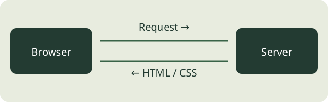

문서 안팎으로 이동하기

비디오 삽입
직접 확인: 재생·일시정지·음량 조절을 해보세요. 자동 재생은 사용하지 않습니다.
직접 해볼 일
소스에서 내용이나 속성을 하나 바꾸고 결과를 확인하세요. 변경한 내용과 이유를 본인의 말로 기록한 뒤 학습 완료 여부를 판단하세요.
웹프로그래밍 · 강의별 실습

직접 확인: 재생·일시정지·음량 조절을 해보세요. 자동 재생은 사용하지 않습니다.
소스에서 내용이나 속성을 하나 바꾸고 결과를 확인하세요. 변경한 내용과 이유를 본인의 말로 기록한 뒤 학습 완료 여부를 판단하세요.